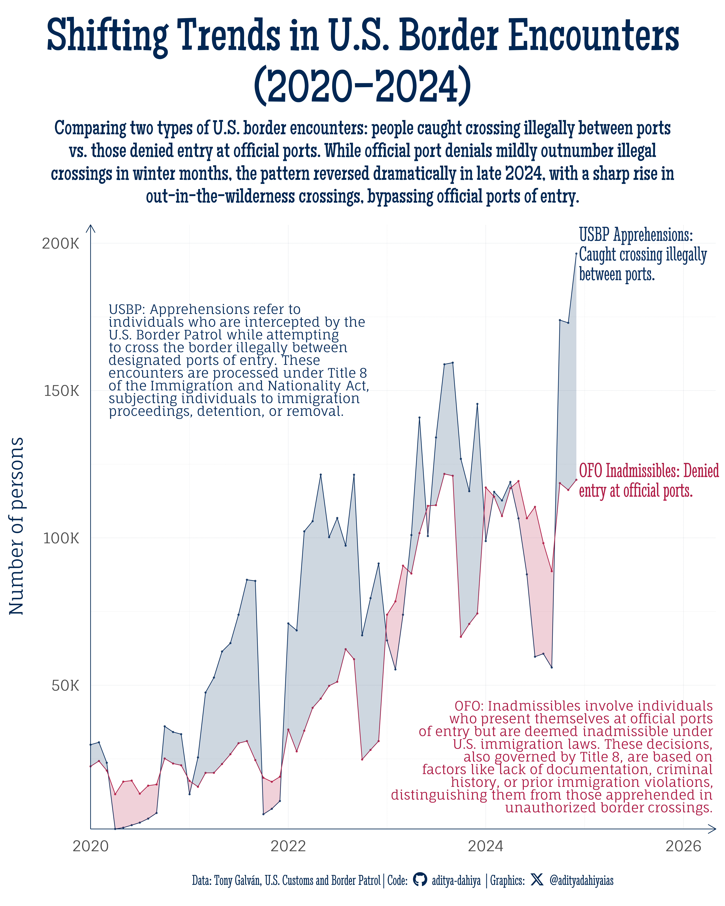

Encounters at U.S. Borders: A Seasonal Shift in Data
Visualization, created using {ggbraid}, compares monthly U.S. border encounters from 2020 to 2024, highlighting the dominant type of encounter with a color-coded ribbon (red for illegal crossings, blue for official port denials).
#TidyTuesday
{ggbraid}
Time Series
Author
Aditya Dahiya
Published
November 25, 2024
About the Data
The U.S. Customs and Border Protection (CBP) Encounter Data provides a comprehensive overview of border enforcement activity in the United States from fiscal year 2020 onwards. The dataset includes information on encounters processed under Title 8 (standard immigration law) and Title 42 (a public health directive used during the COVID-19 pandemic to expedite expulsions), as well as data on apprehensions and inadmissibles across the Northern and Southwest Land Borders and Nationwide operations. Curated by Tony Galván, this dataset allows for the exploration of trends in migration and enforcement, such as seasonal and year-over-year patterns, and the impact of shifting policies like the potential end of Title 42. It provides valuable context for analyzing demographic breakdowns, citizenship information, and regional variations in encounters. More details, including a thorough exploration, are available in Tony’s blog post. Users should note that these data are subject to ongoing corrections and updates as part of live CBP system extractions..

Figure 1: Monthly U.S. Border Encounters by Type (Jan 2020 – Nov 2024): This graph compares two types of U.S. border encounters—**USBP apprehensions** (red, individuals caught crossing illegally between ports) and **OFO inadmissibles** (blue, individuals denied entry at official ports)—over the past five years. The x-axis represents time (months), while the y-axis shows the number of encounters. The ribbon between the lines highlights which type of encounter dominates each month, with the ribbon shaded red or blue accordingly. While encounters at official ports (blue) typically outnumber illegal crossings (red) during winter months, a notable reversal occurred in October–November 2024, with a surge in apprehensions between ports.
How I made this graphic?
The {ggbraid} package, created by Neal Grantham, is a versatile tool in the R ecosystem, extending the capabilities of ggplot2. It allows users to create “braided ribbons” between two line plots, visually highlighting which of the two values dominates at different points. This is achieved through the geom_braid() function, which adds a ribbon layer that dynamically fills based on conditional aesthetics (e.g., which line is higher). For more details, you can explore the official documentation here
Loading required libraries, data import & creating custom functions.
Code
# Data Import and Wrangling Toolslibrary(tidyverse) # All things tidy# Final plot toolslibrary(scales) # Nice Scales for ggplot2library(fontawesome) # Icons display in ggplot2library(ggtext) # Markdown text support for ggplot2library(showtext) # Display fonts in ggplot2library(colorspace) # Lighten and Darken colourslibrary(patchwork) # Compiling Plotslibrary(ggbraid) # For improved ribbon (braid) plots# A helper function for geom_richtextstr_wrap_html <-function(string, width =40) {str_wrap(string, width = width) %>%str_replace_all("\n", "<br>")}cbp_resp <- readr::read_csv('https://raw.githubusercontent.com/rfordatascience/tidytuesday/master/data/2024/2024-11-26/cbp_resp.csv')# cbp_state <- readr::read_csv('https://raw.githubusercontent.com/rfordatascience/tidytuesday/master/data/2024/2024-11-26/cbp_state.csv')
Visualization Parameters
Code
# Font for titlesfont_add_google("Maiden Orange",family ="title_font") # Font for the captionfont_add_google("Stint Ultra Condensed",family ="caption_font") # Font for plot textfont_add_google("Fauna One",family ="body_font") showtext_auto()# Official USA Flag coloursmypal <-c("#0A3161", "#B31942")# A base Colourbg_col <-"#FFFFFF"seecolor::print_color(bg_col)# Colour for highlighted texttext_hil <-darken(mypal[2], 0.2)seecolor::print_color(text_hil)# Colour for the texttext_col <-darken(mypal[1], 0.2)seecolor::print_color(text_col)# Define Base Text Sizebts <-90# Caption stuff for the plotsysfonts::font_add(family ="Font Awesome 6 Brands",regular = here::here("docs", "Font Awesome 6 Brands-Regular-400.otf"))github <-""github_username <-"aditya-dahiya"xtwitter <-""xtwitter_username <-"@adityadahiyaias"social_caption_1 <- glue::glue("<span style='font-family:\"Font Awesome 6 Brands\";'>{github};</span> <span style='color: {text_col}'>{github_username} </span>")social_caption_2 <- glue::glue("<span style='font-family:\"Font Awesome 6 Brands\";'>{xtwitter};</span> <span style='color: {text_col}'>{xtwitter_username}</span>")# Add text to plot--------------------------------------------------------------plot_title <-"Shifting Trends in U.S. Border Encounters\n(2020–2024)"plot_subtitle <-"Comparing two types of U.S. border encounters: people caught crossing illegally between ports vs. those denied entry at official ports. While official port denials mildly outnumber illegal crossings in winter months, the pattern reversed dramatically in late 2024, with a sharp rise in out-in-the-wilderness crossings, bypassing official ports of entry."plot_caption <-paste0("**Data:** Tony Galván, U.S. Customs and Border Patrol", " | **Code:** ", social_caption_1, " | **Graphics:** ", social_caption_2 )rm(github, github_username, xtwitter, xtwitter_username, social_caption_1, social_caption_2)
Exploratory Data Analysis and Wrangling
Code
# cbp_resp |># summarytools::dfSummary() |># summarytools::view()dim(cbp_resp)# dim(cbp_state)names(cbp_resp)labels_month <-c("JAN", "FEB", "MAR", "APR","MAY", "JUN", "JUL", "AUG","SEP", "OCT", "NOV", "DEC")# Number of encounters per month for last 5 years# cbp_resp |> # count(fiscal_year, month_abbv) |> # mutate(# month_abbv = fct(month_abbv, levels = labels_month),# fiscal_year = as.character(fiscal_year)# ) |> # ggplot(# mapping = aes(# x = month_abbv,# y = n, # group = fiscal_year,# colour = fiscal_year# )# ) +# geom_point() +# geom_line()# # Number of encounters per month for last 5 years# cbp_resp |> # # # Remove a few abberrant sounding observations# filter(encounter_count < 10000) |> # # count(fiscal_year, month_abbv, wt = encounter_count) |> # mutate(# month_abbv = fct(month_abbv, levels = labels_month),# fiscal_year = as.character(fiscal_year)# ) |> # ggplot(# mapping = aes(# x = month_abbv,# y = n, # group = fiscal_year,# colour = fiscal_year# )# ) +# geom_point() +# geom_line()df <- cbp_resp |>mutate(# Parse month abbreviations to numbersmonth_num =match(month_abbv, str_to_upper(month.abb)), # Combine year and month into a datedata_date =make_date(year = fiscal_year, month = month_num, day =1) ) |>count(data_date, citizenship, wt = encounter_count) |>mutate(country = countrycode::countryname(citizenship),country =if_else(is.na(country), "Others", country) )#### Attempt 1: A Stream Graph# df |> # ggplot(# mapping = aes(# x = data_date,# y = n,# group = country,# fill = country# )# ) +# ggstream::geom_stream(# colour = "white",# bw = 0.5, # sorting = "inside_out"# ) +# ggstream::geom_stream_label(# mapping = aes(# label = country# ),# bw = 0.5, # sorting = "inside_out"# ) +# theme(legend.position = "none")df2 <- cbp_resp |>mutate(# Parse month abbreviations to numbersmonth_num =match(month_abbv, str_to_upper(month.abb)), # Combine year and month into a datedata_date =make_date(year = fiscal_year, month = month_num, day =1) ) |># Remove data that seems most likely an aberrationfilter(encounter_count <10000) |>count( data_date, encounter_type, wt = encounter_count ) |>filter(encounter_type !="Expulsions")# Pivot data wider for use with geom_ribbon and geom_braiddf2_wide <- df2 |>pivot_wider(id_cols = data_date,names_from = encounter_type,values_from = n )df2_labels <- df2 |>group_by(encounter_type) |>slice_max(order_by = data_date, n =1) |>ungroup() |>mutate(description =c("USBP Apprehensions: Caught crossing illegally between ports.","OFO Inadmissibles: Denied entry at official ports." ) )text_annotation_1 <-str_wrap_html("**USBP: Apprehensions** refer to individuals who are intercepted by the U.S. Border Patrol while *attempting to cross the border illegally between designated ports of entry*. These encounters are processed under Title 8 of the Immigration and Nationality Act, subjecting individuals to immigration proceedings, detention, or removal.",40)str_view(text_annotation_1)text_annotation_2 <-str_wrap_html("**OFO: Inadmissibles** involve *individuals who present themselves at official ports of entry* but are deemed inadmissible under U.S. immigration laws. These decisions, also governed by Title 8, are based on factors like lack of documentation, criminal history, or prior immigration violations, distinguishing them from those apprehended in unauthorized border crossings.",45)str_view(text_annotation_2)
# Saving a thumbnaillibrary(magick)# Saving a thumbnail for the webpageimage_read(here::here("data_vizs", "tidy_us_border_data.png")) |>image_resize(geometry ="400") |>image_write( here::here("data_vizs", "thumbnails", "tidy_us_border_data.png" ) )
Session Info
Code
# Data Import and Wrangling Toolslibrary(tidyverse) # All things tidy# Final plot toolslibrary(scales) # Nice Scales for ggplot2library(fontawesome) # Icons display in ggplot2library(ggtext) # Markdown text support for ggplot2library(showtext) # Display fonts in ggplot2library(colorspace) # Lighten and Darken colourslibrary(patchwork) # Compiling Plotslibrary(ggbraid) # For improved ribbon (braid) plotssessioninfo::session_info()$packages |>as_tibble() |>select(package, version = loadedversion, date, source) |>arrange(package) |> janitor::clean_names(case ="title" ) |> gt::gt() |> gt::opt_interactive(use_search =TRUE ) |> gtExtras::gt_theme_espn()
Table 1: R Packages and their versions used in the creation of this page and graphics